结论：低开高走、普涨反弹，但止跌三要件一条没满足，仍在找底背驰，总仓 ≤4 成、不抢低点。 上证收 3538.95（+0.15%），最低 3476.65 创 60 日新低、收盘未站 MA5 3564.55；创业板 +3.08% 收 2280.20，差 MA10 2371.15；中证500 收 6128.99 低于 MA5 6190.45。二类热点国产算力，机器人、传媒属超跌反弹。池内 9 只全部无方法买点。
① 「低开高走上扬」 —— 上证 O 3503.52 低开、低 3476.65 创 60 日新低，收 3538.95 收在日内高位区；深成 +1.93%、创业板 +3.08%、中证500 +2.05%，全线低开反抽 ✓
② 「没出收盘站住 5 日均线的有力度底分型」 —— 上证收 3538.95 < MA5 3564.55（差 25.60 点）；中证500 收 6128.99 < MA5 6190.45（差 61.46 点）；创业板收 2280.20 仅微幅站上 MA5 2277.90（+2.30 点），仍差 MA10 2371.15 ✓
③ 「空间不足、卡在压力」 —— 上证最高 3544.60，距 MA5 仅 19.95 点；日线近似中枢在 3660.72–3669.44，更远，属小级别压力口径。
④ 「创业板低点无法确立」 —— 最低 2188.45 创 60 日新低，收盘距最低 91.75 点，深 V 未确认。
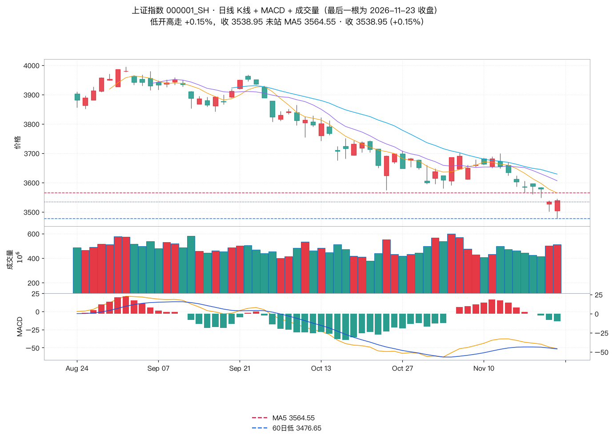
上证指数 · 低开高走，收盘未站 MA5
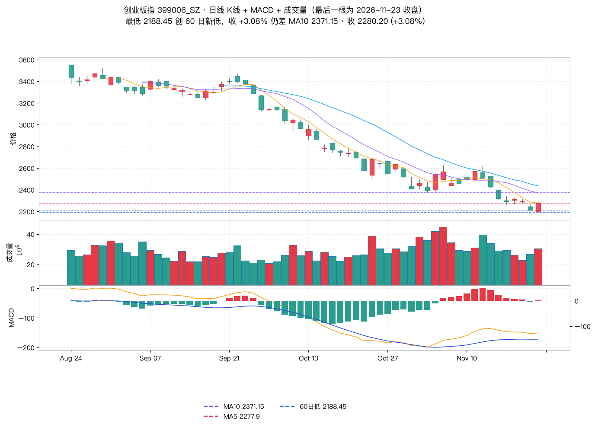
创业板指 · 新低反抽，上方中枢压力未破
| 方向 | 老师口径 | 实测 |
|---|---|---|
| 国产算力 | 二类热点，防范前期强势股补跌 | 篮子 -0.38%（3涨4跌）；北方华创 -6.55%，但收 541.09 仍高于 MA20 538.40、60日低 468.34，未破位 |
| 算力/存储 | 一类跌幅很大：中际旭创、部分存储 | 中际旭创回撤 -57.3%、长鑫 -40.1%；当日 +6.10%/+2.10% |
| 机器人 | 拉升凶，超跌反弹非 V 型反转 | 人形机器人 +9.44%（9涨0跌），海天瑞声 20cm 涨停 |
| 文化传媒 | 更像资金自救 | AI视频/传媒 +8.25%，申万传媒 +5.13% 居首 |
| 权重红利 | （对照） | 银行 -1.53%、保险 -1.72%、煤炭石油 -2.23% |
① 「超跌反弹首选前期跌幅大的科技方向」 —— 元件/PCB +4.92%、算力/CPO +5.67%、机器人 +9.44%、传媒 +8.25%，权重红利全线绿盘 ✓
② 温度 25 度、一类热点无、二类热点国产算力；涨跌 4658/783、涨停 145，是普涨反弹，不是新主线确立。
③ 资金面：宽基 ETF 份额（基准日 11/20）上证50 +44.86%、中证1000 +16.65%、中证500 +13.64%、创业板ETF +6.55% —— 抄底资金已进，今日指数收在日内高位，进场未亏。
| 标的 | 题材 | 收盘 | 老师定性 | 关键位 | 实测印证 | 动作 |
|---|---|---|---|---|---|---|
| 药明康德 | 大医药 | 146.55 +4.08% | 无买点，等突破 157.8 出 15 分钟底分型三买 | 157.80 | 最高 147.58，距 157.8 差 10.22；收站 MA5 144.38 | 等 |
| 中国船舶 | 船舶 | 34.30 -0.58% | 等突破压力 36.75 出 15 分钟底分型三买 | 36.75 | 最高 34.42，差 2.33；收盘仍低于 MA5 34.44 | 等 |
| 瑞芯微 | 端侧AI | 202.88 +10.00% | 无买点，观察 2-3 天等内部横盘 | — | 涨停，站 MA5 195.86，仍差 MA10 209.46 | 等 |
| 伊利股份 | 大消费 | 32.85 -1.50% | 跌破 31.95 顶背驰大概率出现 | 31.95 | 最低 32.26，距 31.95 差 0.31，强势震荡未破 | 等 |
| 海天瑞声 | 机器人 | 103.80 +20.00% | 无买点，观察 2-3 天 | — | 涨停大阳线，偏离 MA5 92.45 达 12.28% | 等 |
| 创业板ETF易方达 | 超跌 | 2.295 +2.91% | 等突破 2.36 出 15 分钟底分型回抽三买 | 2.360 | 最高 2.314，差 0.046；收 2.295 刚站 MA5 2.294 | 等 |
| 兆易创新 | 存储 | 214.61 +4.24% | 稳健等日线有力度底分型；激进等突破 224.6 | 224.60 | 最高 215.77，差 8.83；收 214.61 差 MA5 214.68 仅 0.07 | 等 |
| 华丰科技 | 华为 | 88.41 +2.75% | 无买点，先与华胜天成比强弱 | 80.60 | 最低 80.02 击穿上期关注位；强于华胜天成 6.62pp | 等 |
| 中芯国际 | 国产算力 | 121.60 -3.08% | 向下调整，出日线顶分型，等底分型 | — | 收在 MA5 119.57 上方 1.70%，60日高 129.89 未破 | 等 |
焦点品种：中际旭创 417.20 +6.10%（回撤 -57.3%）、东山精密 71.47 +5.72%（最低 66.04 创 60 日新低）、北方华创 541.09 -6.55%（开盘即最高）、长鑫科技 35.90 +2.10%（未收复 MA5 36.33）—— 全部无方法买点。
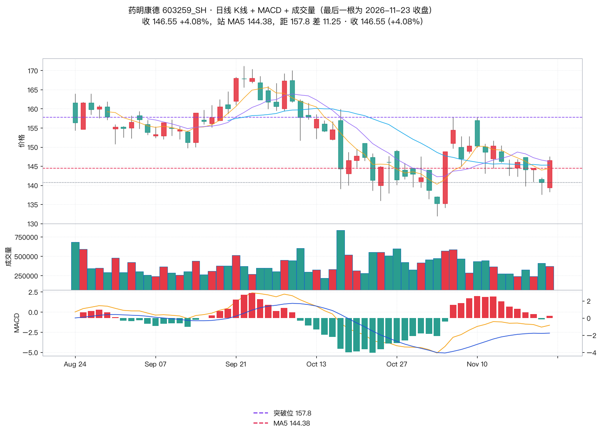
药明康德 · 收 146.55，未触 157.8
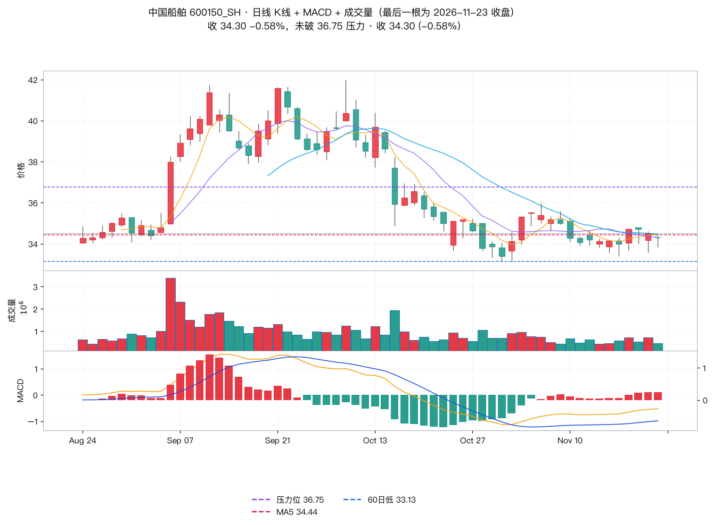
中国船舶 · 收 34.30，未破 36.75
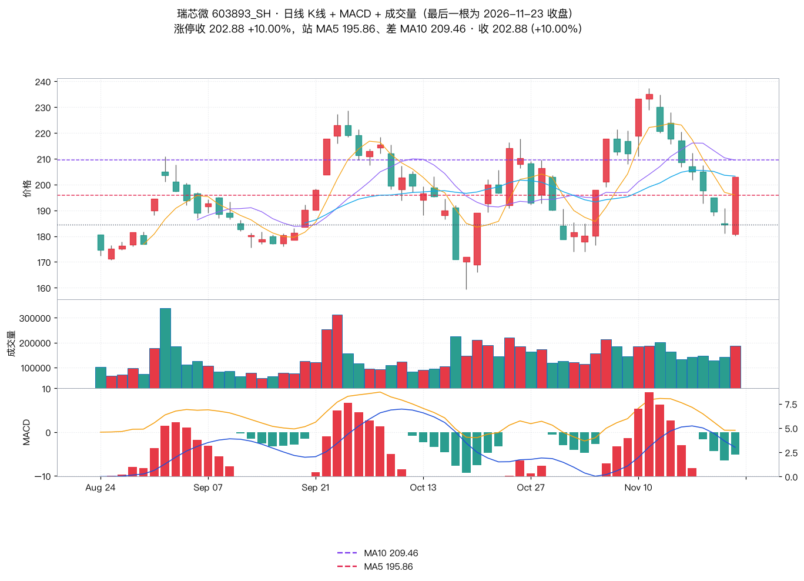
瑞芯微 · 涨停收 202.88
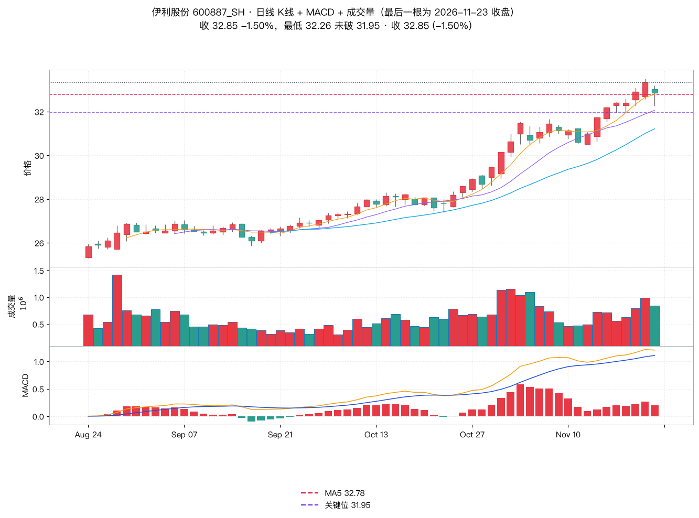
伊利股份 · 低 32.26 未破 31.95
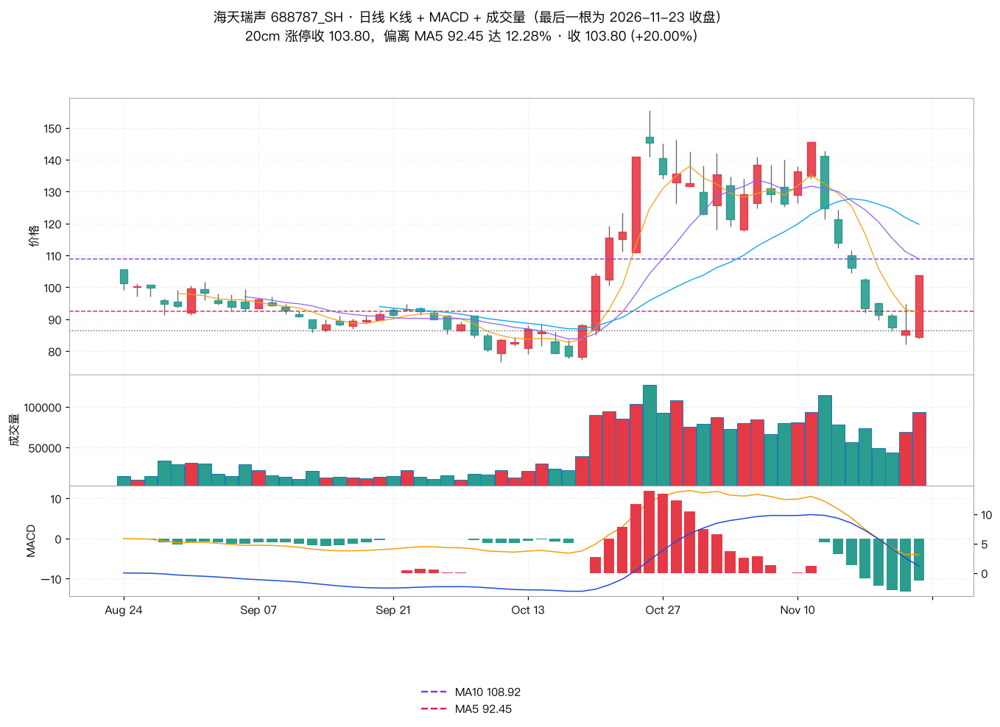
海天瑞声 · 20cm 涨停收 103.80
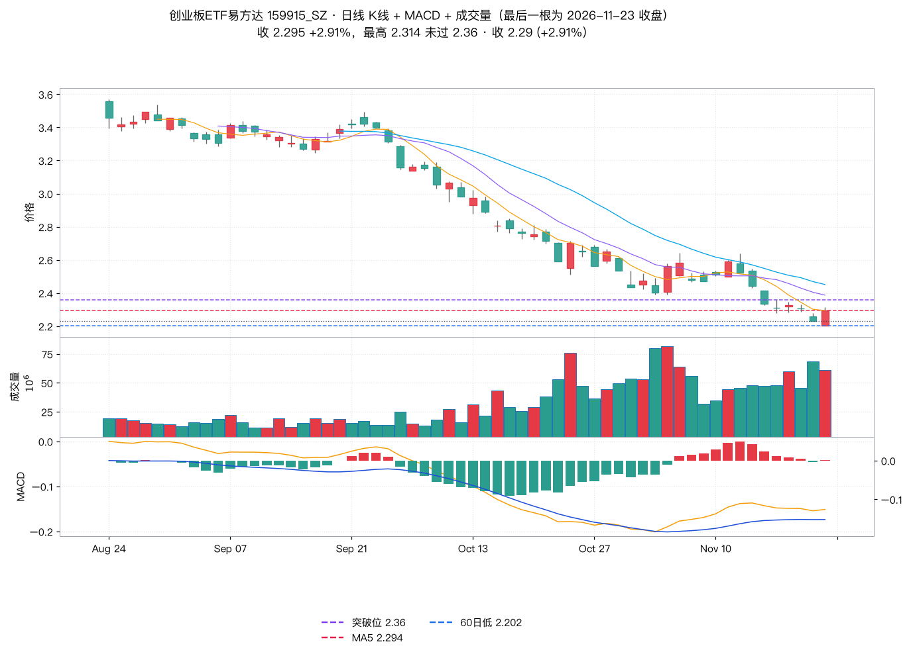
创业板ETF易方达 · 收 2.295，未过 2.36
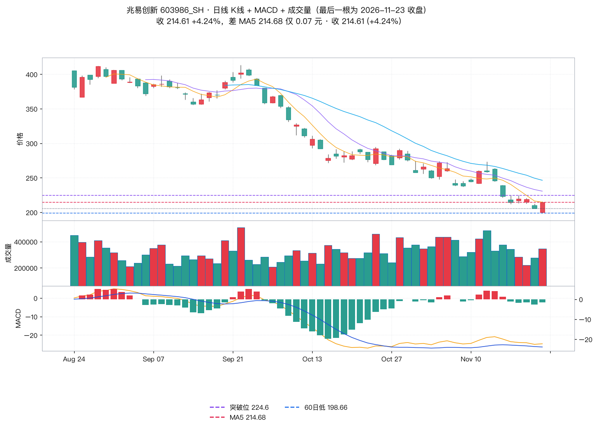
兆易创新 · 收 214.61，未触 224.6
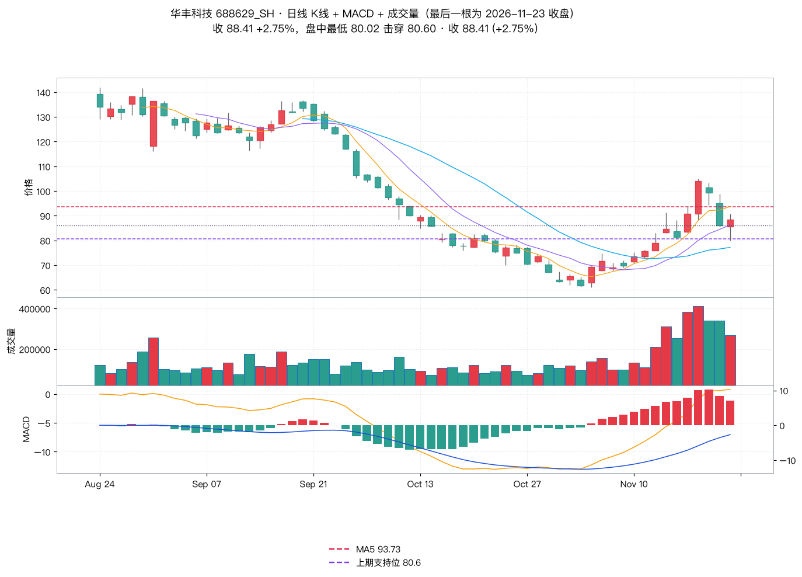
华丰科技 · 盘中低 80.02 破 80.60
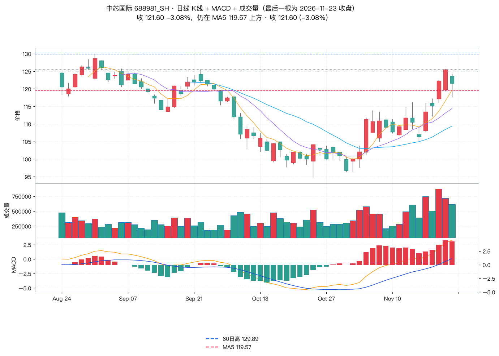
中芯国际 · 收 121.60，跌 3.08%
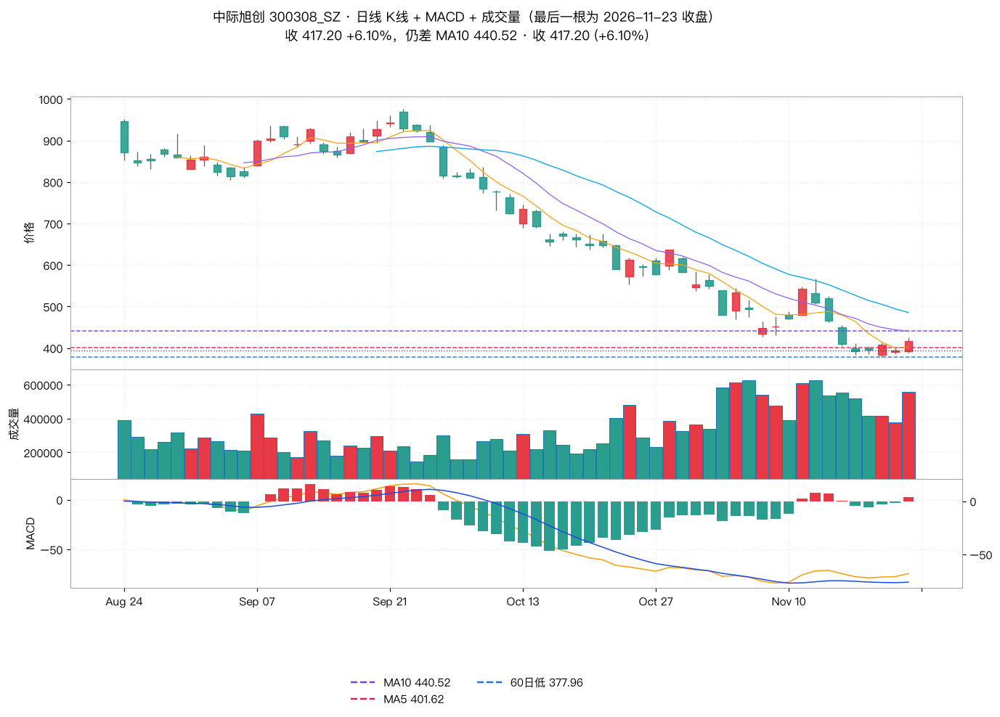
中际旭创 · 收 417.20，仍差 MA10 440.52
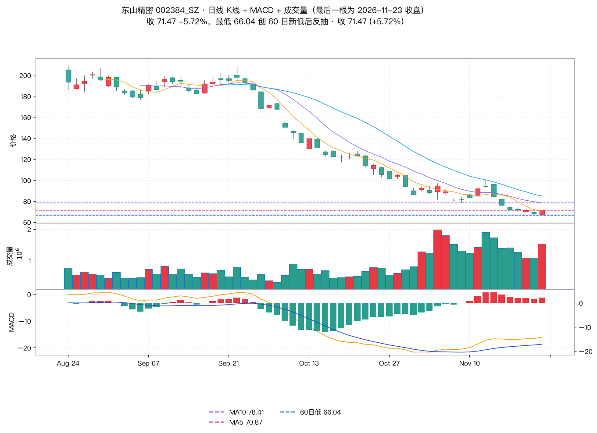
东山精密 · 新低反抽收 71.47
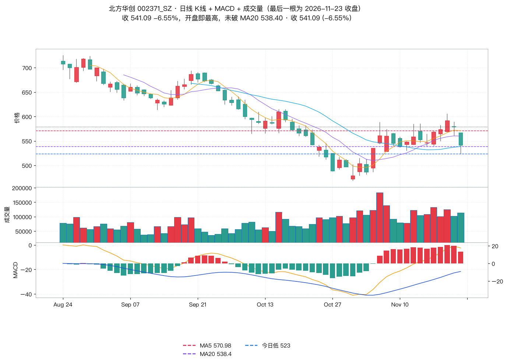
北方华创 · 收 541.09，未破 MA20 538.40
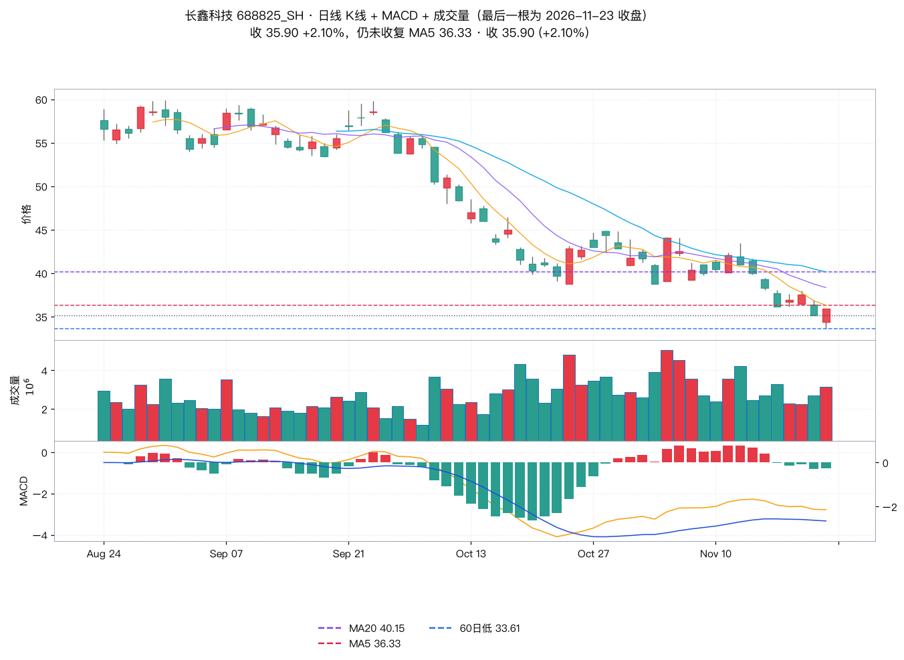
长鑫科技 · 收 35.90，未收复 MA5
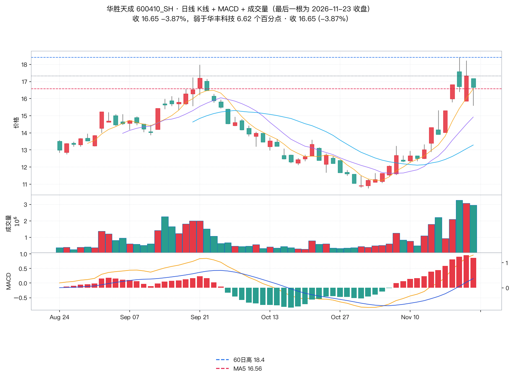
华胜天成 · 收 16.65，弱于华丰 6.62pp
| 老师说法 | 实测 | 判定 |
|---|---|---|
| 「国产算力」列二类热点 | 当日国产算力篮子 -0.38%，仅算力/CPO +5.67% | 口径差异 |
| 「东山精密下跌极端、防范转阴跌」 | 下跌属实（11/12→11/20 累计 -27.8%），但 11/23 反抽 +5.72% 收 71.47 | 口径差异 |
| 「中芯国际月线上涨趋势」 | 已收盘月线 7→10 月连跌，10 月收 96.79；仅 11 月当月反弹 +25.6% | 口径差异 |
| 「中国船舶月线结构扎实收敛」 | 10 月月线 -14.6%（39.10→33.39），收敛主要体现在日线 33.13–41.99 | 口径差异 |
| 上期「华丰科技跌破 80.6 不再关注」 | 11/23 最低 80.02 已破 80.60（收 88.41 收回），老师本期未再提该位 | 状态变化 |
其余判据当日一致 ✓：低开高走、未站 MA5、上证/创业板/中证500 均未止跌、北方华创调整但未破位、中际旭创与存储跌幅大、瑞芯微抗跌、机器人拉升凶、传媒资金自救、伊利未破 31.95；老师给的全部关键位当日均未触发。缠论定性（中枢/底背驰/底分型/三买）按老师口径引用，我方不做分钟级复算。
Tushare 日线（前复权）＋ 新浪快照交叉校验；涨跌停取东财池（涨停 145/146、跌停 3、炸板 24）；ETF 份额基准日 2026-11-20（T+1 披露）。日线近似中枢取近 20 日相邻 K 线重叠区连续 ≥3 段的交集。
来源：都业华《高级班》2026-11-23 收评，执业编号 A0400626100004。以上内容仅供参考，不作为买卖依据，投资有风险，入市需谨慎。
本报告由 AI 依据老师原文自动生成并逐条核验行情数据，核验结果以页面「偏差记录」为准。